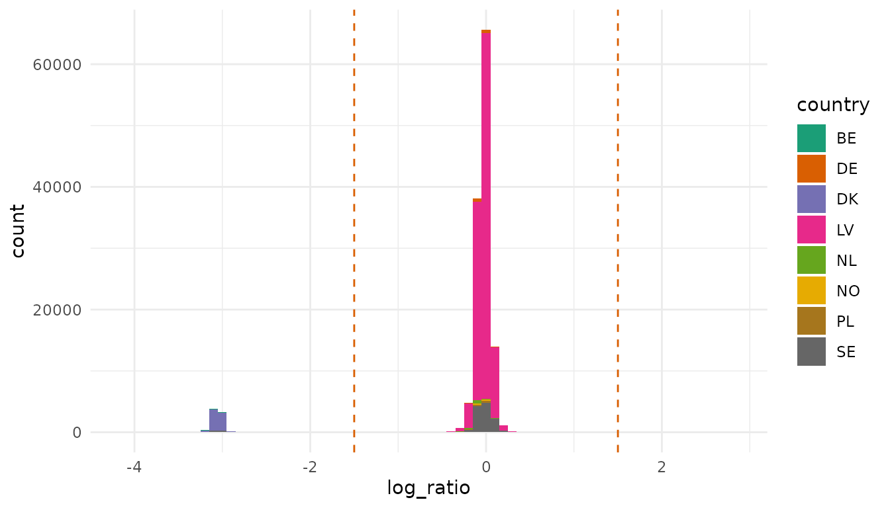
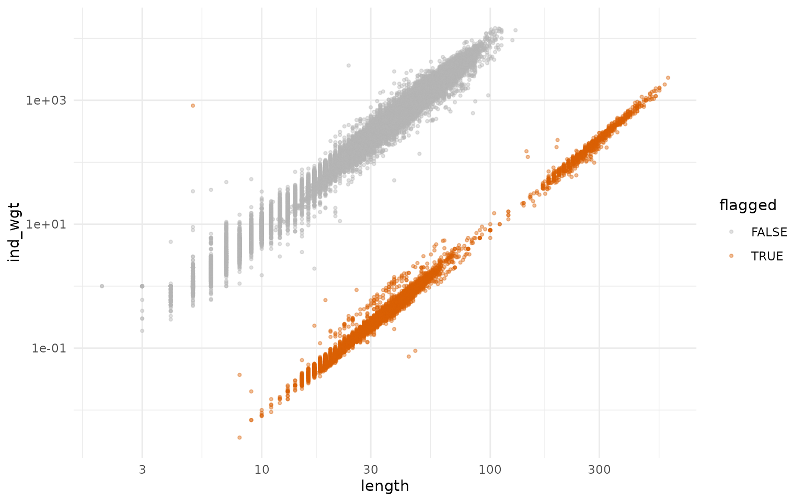
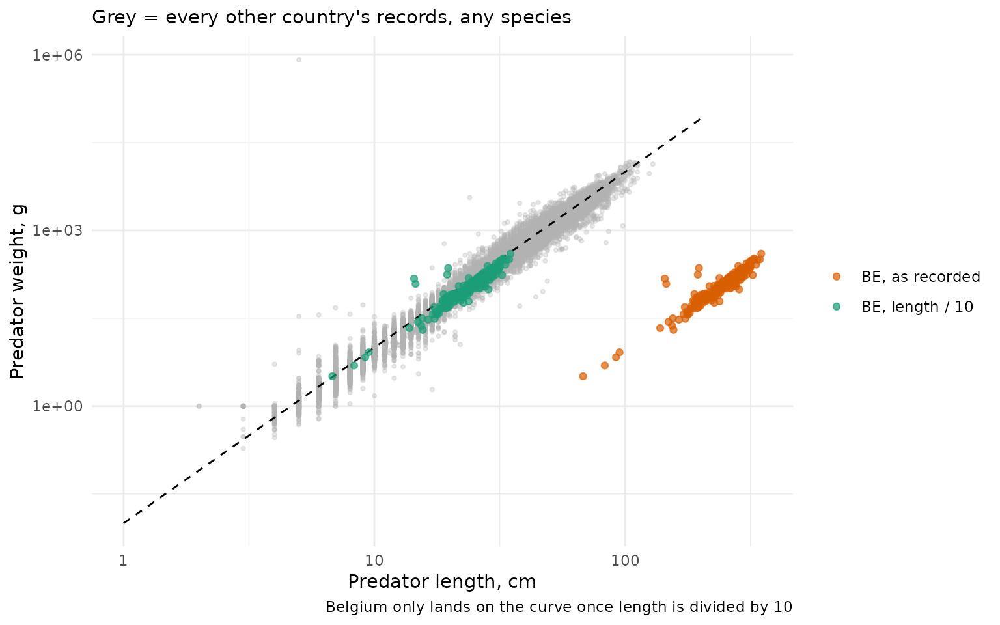
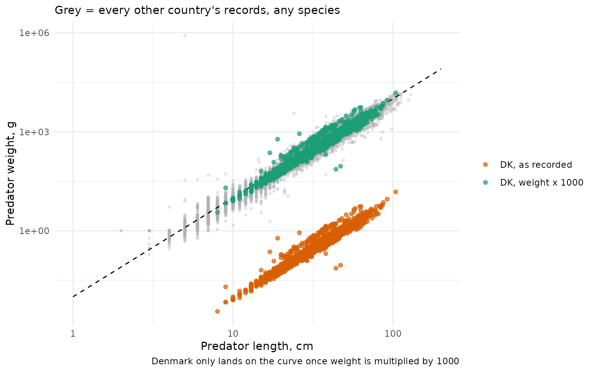
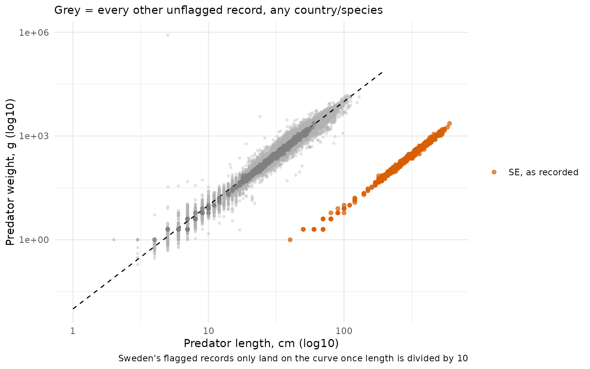
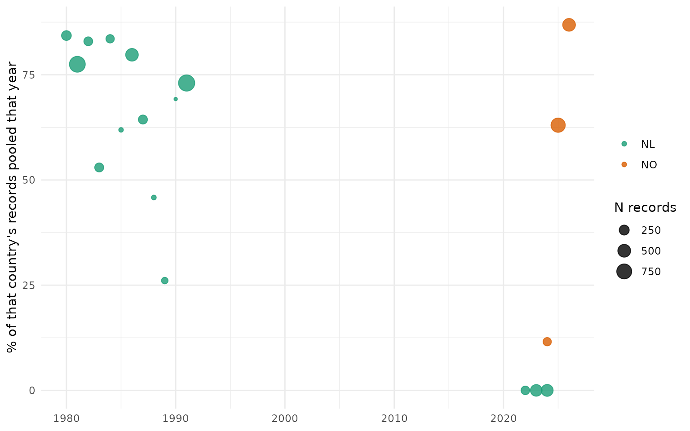
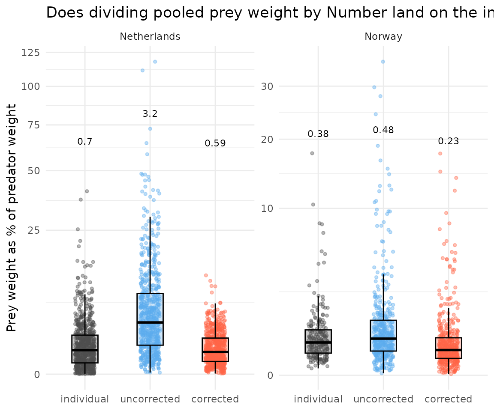
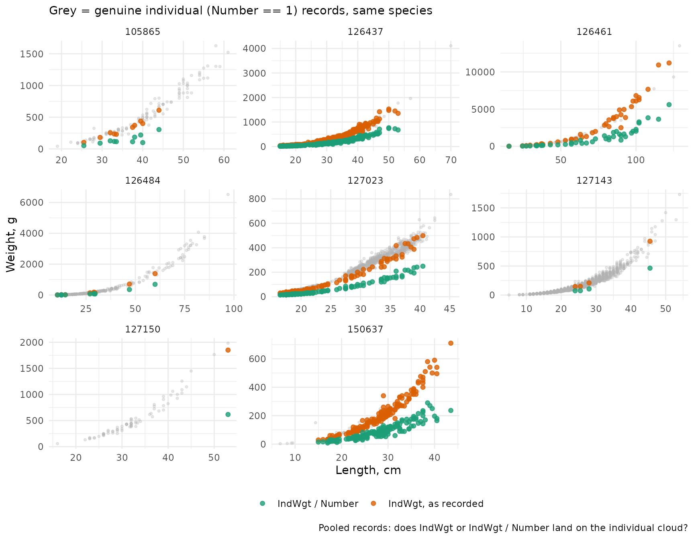
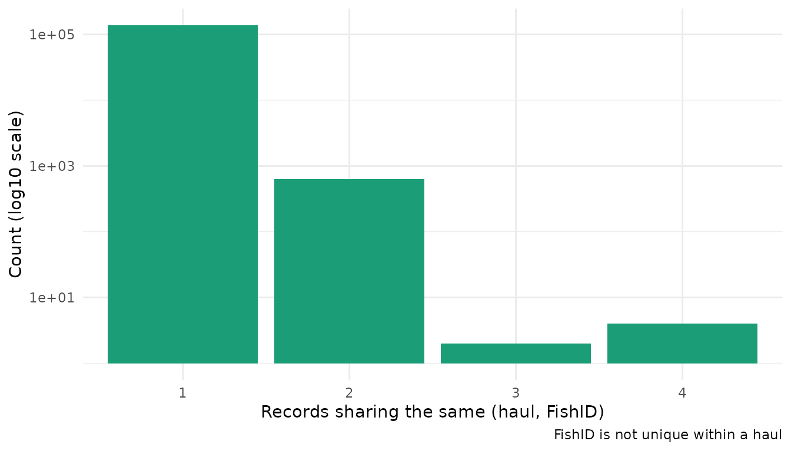
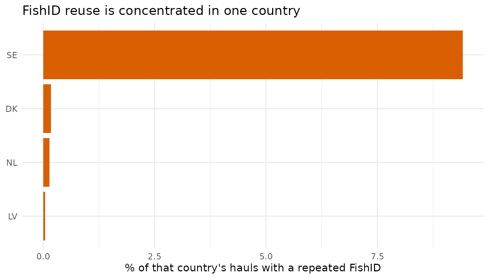

Here I track known issues with the database. These include data entry
errors, which stomachr does not fix internally, but show
how to fix in the example-workflow,
and ambiguities in the file format
documentation (which if fixed, can reduce data entry errors).
First download data.
library(stomachr)
library(dplyr)
library(ggplot2)
theme_set(theme_minimal())
regions <- c("Baltic Sea", "Celtic Seas", "Greater North Sea")
pred <- lapply(regions, function(r) {
path <- tempfile()
download_stomach(path, ecoregion = r)
fi <- readr::read_csv(file.path(path, "File_information.csv"), show_col_types = FALSE) |>
janitor::clean_names() |>
transmute(tbl_upload_id = as.character(tbl_upload_id), country = as.character(country))
prey_n <- readr::read_csv(file.path(path, "PreyInformation.csv"), show_col_types = FALSE) |>
janitor::clean_names() |>
transmute(tbl_predator_information_id = as.character(tbl_predator_information_id)) |>
count(tbl_predator_information_id, name = "n_prey_rows")
readr::read_csv(file.path(path, "PredatorInformation.csv"), show_col_types = FALSE) |>
janitor::clean_names() |>
transmute(
tbl_upload_id = as.character(tbl_upload_id),
tbl_predator_information_id = as.character(tbl_predator_information_id),
tbl_haul_id = as.character(tbl_haul_id),
fish_id = as.character(fish_id),
aphia_id_predator = as.numeric(aphia_id_predator),
number = as.numeric(number),
measurement_increment = as.numeric(measurement_increment),
length = as.numeric(length),
ind_wgt = as.numeric(ind_wgt),
regurgitated = as.numeric(regurgitated),
year = as.numeric(year),
ecoregion = r
) |>
left_join(fi, by = "tbl_upload_id") |>
left_join(prey_n, by = "tbl_predator_information_id") |>
mutate(has_prey = !is.na(n_prey_rows) & n_prey_rows > 0)
}) |>
bind_rows()
#> Warning: One or more parsing issues, call `problems()` on your data frame for details,
#> e.g.:
#> dat <- vroom(...)
#> problems(dat)Known data issues
Units of length and weight of predators. For prey, there are columns
describing which unit it is. For predators, it’s in the description for
IndWgt and Length. stomachr flags
extreme outliers in the join_stomach_data(), based on
residuals of generic length-weight parameters.
lw_a <- 0.01
lw_b <- 3
lw_dat <- pred |>
filter(number == 1, !is.na(length), length > 0, !is.na(ind_wgt), ind_wgt > 0) |>
mutate(
log_ratio = log10(ind_wgt / (lw_a * length^lw_b)),
flagged = abs(log_ratio) > 1.5
)
lw_curve <- data.frame(length = seq(1, 200, length.out = 200)) |>
mutate(ind_wgt = lw_a * length^lw_b)Here we see deviations from an isometric length-weight curve
(weight = a * length^b, a = 0.01, b = 3), per
record (usually a single predator, but can be a pooled predator as well
if number > 1). A record now gets flagged if
abs(log_ratio) > 1.5.
lw_dat |>
ggplot(aes(log_ratio, fill = country)) +
geom_histogram(binwidth = 0.1) +
geom_vline(xintercept = c(-1.5, 1.5), linetype = "dashed", color = "#D95F02") +
scale_fill_brewer(palette = "Dark2")
lw_dat |>
ggplot(aes(length, ind_wgt, color = flagged)) +
geom_point(alpha = 0.4, size = 0.8) +
scale_x_log10() +
scale_y_log10() +
scale_color_manual(values = c(`FALSE` = "grey70", `TRUE` = "#D95F02"))
lw_dat |> filter(flagged) |> count(country, sort = TRUE)
#> # A tibble: 4 × 2
#> country n
#> <chr> <int>
#> 1 DK 6904
#> 2 SE 624
#> 3 BE 242
#> 4 LV 3We don’t know yet whether a flagged record’s length or
ind_wgt is the wrong one. Length is easier to work with.
Assuming all countries do the same error (doesn’t have to be though), we
can see if a length “correction” leads to implausible lengths (if length
varies between 10 and 100, it cannot be in mm because we never collect 1
cm fish. The similar test is harder to make for weight).
call_by_record <- lw_dat |>
filter(flagged) |>
mutate(call = if_else(length / 10 < 5, "weight", "length"))
call_by_country <- call_by_record |>
count(country, call) |>
slice_max(n, by = country) |>
select(country, call)
lw_dat_corrected <- lw_dat |>
left_join(call_by_country, by = "country") |>
mutate(
length = if_else(flagged & call == "length", length / 10, length),
ind_wgt = if_else(flagged & call == "weight", ind_wgt * 1000, ind_wgt)
)Now look at the corrected records:
1. Belgium: predator length recorded in mm, not cm
be_ref <- lw_dat_corrected |> filter(country != "BE")
be_points <- bind_rows(
lw_dat |> filter(country == "BE") |> mutate(group = "BE, as recorded"),
lw_dat |> filter(country == "BE", flagged) |> mutate(length = length / 10, group = "BE, length / 10")
)
ggplot() +
geom_point(data = be_ref, aes(length, ind_wgt), color = "grey70", alpha = 0.3, size = 0.8) +
geom_line(data = lw_curve, aes(length, ind_wgt), linetype = "dashed", linewidth = 0.5) +
geom_point(data = be_points, aes(length, ind_wgt, color = group), alpha = 0.7) +
scale_x_log10() +
scale_y_log10() +
scale_color_manual(values = c("BE, as recorded" = "#D95F02", "BE, length / 10" = "#1B9E77")) +
labs(
x = "Predator length, cm", y = "Predator weight, g", color = NULL,
caption = "Belgium only lands on the curve once length is divided by 10",
subtitle = "Grey = every other country's records, any species"
)
-
Fix applied in the example vignettes:
pred_length = if_else(country == "BE", pred_length / 10, pred_length).
2. Denmark: predator weight recorded in kg, not g
dk_ref <- lw_dat_corrected |> filter(country != "DK")
dk_points <- bind_rows(
lw_dat |> filter(country == "DK") |> mutate(group = "DK, as recorded"),
lw_dat |> filter(country == "DK", flagged) |> mutate(ind_wgt = ind_wgt * 1000, group = "DK, weight x 1000")
)
ggplot() +
geom_point(data = dk_ref, aes(length, ind_wgt), color = "grey70", alpha = 0.3, size = 0.8) +
geom_line(data = lw_curve, aes(length, ind_wgt), linetype = "dashed", linewidth = 0.5) +
geom_point(data = dk_points, aes(length, ind_wgt, color = group), alpha = 0.7) +
scale_x_log10() +
scale_y_log10() +
scale_color_manual(values = c("DK, as recorded" = "#D95F02", "DK, weight x 1000" = "#1B9E77")) +
labs(
x = "Predator length, cm", y = "Predator weight, g", color = NULL,
caption = "Denmark only lands on the curve once weight is multiplied by 1000",
subtitle = "Grey = every other country's records, any species"
)
-
Fix applied in the example vignettes:
ind_wgt = if_else(country == "DK", ind_wgt * 1000, ind_wgt).
3. Sweden: predator length recorded in mm, not cm (*one upload only)
se_ref <- lw_dat_corrected |> filter(!(country == "SE" & flagged))
se_points <- bind_rows(
lw_dat |> filter(country == "SE", flagged) |> mutate(group = "SE, as recorded"),
lw_dat |> filter(country == "SE", flagged) |> mutate(length = length / 10, group = "SE, length / 10")
)
ggplot() +
geom_point(data = se_ref, aes(length, ind_wgt), color = "grey70", alpha = 0.3, size = 0.8) +
geom_line(data = lw_curve, aes(length, ind_wgt), linetype = "dashed", linewidth = 0.5) +
geom_point(data = se_points, aes(length, ind_wgt, color = group), alpha = 0.7) +
scale_x_log10() +
scale_y_log10() +
scale_color_manual(values = c("SE, as recorded" = "#D95F02", "flagged SE, length / 10" = "#1B9E77")) +
labs(
x = "Predator length, cm (log10)", y = "Predator weight, g (log10)", color = NULL,
caption = "Sweden's flagged records only land on the curve once length is divided by 10",
subtitle = "Grey = every other unflagged record, any country/species"
)
- Only
country == "SE" & flaggedis affected. Note! In contrast to BE and DK, this is limited to a single upload (tbl_upload_id == "8337", cod, Baltic Sea), not for all submissions by the country. -
Fix applied in the example vignettes:
pred_length = if_else(country == "BE" | tbl_upload_id == "8337", pred_length / 10, pred_length), same line as the Belgium fix above, since both are the same length-in-mm issue.
4. Sweden: Regurgitated sometimes uses a legacy code,
not a count
This is a tricky one.
After consultation with ICES stomach analysts directly, the normal
convention seem to be that 0/NA = not
regurgitated, 1 = regurgitated. This does not match the instructions,
which says: “Number of stomachs regurgitated”, i.e., a count. Nor does
it match the old version in Sweden’s national database, where
1 = intact, 2 = regurgitated.
Hence, a 1 in Sweden could therefore mean that it was
regurgitated (if the new convention is used), or that it was not
regurgitated (old Swedish convention). 2 in a Swedish
record could mean 2 regurgitated stomachs (i.e., against convention, but
in line with the actual instructions), but only if the
record is a pooled record. However, Sweden does not normally
report pooled stomachs. We can see that’s not the case here, because
even if records with 2 from Sweden did refer to the correct
input of number of regurgitated stomachs, then this number should never
exceed the value in number. A better test is this: if the
old code is used, then there should be no zeroes in the
tbl_upload_id, which if the new code is used (under
whichever interpretation of it), should be very unlikely!
(There are other issues with regurgitation, see below.)
# Regurgitated is a count out of Number (ICES: "Number of stomachs regurgitated")
# So Regurgitated > Number is not impossible unless a different code is in use.
pred |>
filter(!is.na(regurgitated), !is.na(number), regurgitated > number) |>
count(tbl_upload_id, country)
#> # A tibble: 1 × 3
#> tbl_upload_id country n
#> <chr> <chr> <int>
#> 1 8337 SE 4
pred |>
filter(country == "SE") |>
summarise(n = n(), .by = c(tbl_upload_id, regurgitated)) |>
summarise(has_zero = any(regurgitated == 0, na.rm = TRUE), .by = tbl_upload_id) |>
filter(!has_zero)
#> # A tibble: 1 × 2
#> tbl_upload_id has_zero
#> <chr> <lgl>
#> 1 8337 FALSE-
Fix applied in the example vignettes:
regurgitated = dplyr::if_else(tbl_upload_id == "8337", regurgitated - 1, regurgitated)
5. Corrupted ICESrectangle codes (handled
automatically, no manual fix needed)
Some submissions (seen in Celtic Seas data) have corrupt
ICESrectangle codes – e.g. "46E9" stored as
"46000000000", as if a spreadsheet read it as scientific
notation before export. Unlike everything else in this section,
join_stomach_data() already handles this on its own: it
detects codes that don’t match the real ##L# format and
recomputes them from ShootLat/ShootLong,
printing how many rows were affected.
valid_rect <- "^[0-9]{2}[A-Za-z][0-9]$"
rect_dat <- lapply(regions, function(r) {
path <- tempfile()
download_stomach(path, ecoregion = r)
readr::read_csv(file.path(path, "HaulInformation.csv"),
col_types = readr::cols(ICESrectangle = readr::col_character()), show_col_types = FALSE
) |>
janitor::clean_names() |>
transmute(ices_rectangle = ice_srectangle, ecoregion = r)
}) |>
bind_rows()
#> Warning: One or more parsing issues, call `problems()` on your data frame for details,
#> e.g.:
#> dat <- vroom(...)
#> problems(dat)
rect_dat |>
filter(!is.na(ices_rectangle), !grepl(valid_rect, ices_rectangle)) |>
count(ices_rectangle, sort = TRUE)
#> # A tibble: 20 × 2
#> ices_rectangle n
#> <chr> <int>
#> 1 51 39
#> 2 4800000000 23
#> 3 5100000000 16
#> 4 52 16
#> 5 51000000000 14
#> 6 490000000 13
#> 7 5000000000 13
#> 8 460000000 10
#> 9 480000000 9
#> 10 500000000 7
#> 11 520 7
#> 12 48000000 6
#> 13 49000000 5
#> 14 46000000 4
#> 15 52000000000 4
#> 16 470000000 2
#> 17 480000 2
#> 18 4900000000 2
#> 19 510 2
#> 20 47000000 1- Malformed codes are consistently long, all-numeric strings – the scientific-notation signature – not random corruption.
-
No fix needed here beyond what’s already in
join_stomach_data(); included for completeness, since every other entry in this section needs a manual workaround and this one doesn’t.
6. Norway: Number is populated, but the record isn’t
actually pooled
Number can be greater than 1, and the file format
documentation describes it as “Number of specimens taken for stomach
analyses (pooled samples)” – i.e. that record’s prey rows
should describe Number fish pooled together for
all n = number predators that row corresponds to. It’s
unclear what the column IndWgt corresponds to when
Number > 1
Which countries pool?
pool_dat <- lapply(regions, function(r) {
path <- tempfile()
download_stomach(path, ecoregion = r)
fi <- readr::read_csv(file.path(path, "File_information.csv"), show_col_types = FALSE) |>
janitor::clean_names() |>
transmute(tbl_upload_id = as.character(tbl_upload_id), country = as.character(country))
readr::read_csv(file.path(path, "PredatorInformation.csv"), show_col_types = FALSE) |>
janitor::clean_names() |>
transmute(tbl_upload_id = as.character(tbl_upload_id), number = as.numeric(number), year = as.numeric(year)) |>
left_join(fi, by = "tbl_upload_id")
}) |>
bind_rows() |>
filter(!is.na(number), !is.na(year))
pool_dat |>
summarise(n = n(), pct_pooled = 100 * mean(number > 1), .by = c(country, year)) |>
mutate(pooled = ifelse(pct_pooled == 0, "Not pooled", "pooled")) |>
mutate(sum = sum(pct_pooled), .by = c(country)) |>
filter(sum > 0) |>
ggplot(aes(year, pct_pooled, size = n, color = country)) +
geom_point(alpha = 0.8) +
scale_color_brewer(palette = "Dark2") +
labs(x = NULL, y = "% of that country's records pooled that year", size = "N records", color = NULL)
- Only Norway and the Netherlands ever report
Number > 1 - The Netherlands phased it out: ~74% of its 1980s-90s records were pooled, 0% in its 2020s submissions.
- Norway’s only data here is 2020s, still ~66% has
Number > 1.
Does dividing prey weight by Number help, or hurt?
A pooled record means that 1 row is not 1 individuals. Getting this right is crucial for calculating relative prey weight/stomach fullness.
Here I illustrate this by comparing
total prey weight / predator weight for records where we
know 1 row = 1 individual (Number == 1), against pooled
records left alone (“uncorrected”) by row, and pooled records with prey
weight divided by Number (“corrected”), one point per
predator.
Another insight here: Norway has IndWgt on its pooled
records; the Netherlands doesn’t (0 of 2,475 rows), so the Netherlands
version uses the same universal length-weight curve from earlier
(a = 0.01, b = 3) as the size reference instead. This is
also a clue that Norway’s number column may be mis-reported…
Every group below (individual, uncorrected, corrected) is restricted
to the same set of species per country: those with both
Number == 1 and Number > 1 records.
Otherwise a species that’s always pooled (or always individual) for that
country would pull a whole group’s ratios up or down for reasons that
have nothing to do with pooling – e.g. if the pooled species just happen
to eat less on average, that would look like “pooling deflates the
ratio” even with no pooling artefact at all.
prey_dat <- lapply(regions, function(r) {
path <- tempfile()
download_stomach(path, ecoregion = r)
join_stomach_data(path) |>
summarise(
total_prey_weight = sum(weight, na.rm = TRUE),
any_weight = any(!is.na(weight)),
number = dplyr::first(number),
ind_wgt = dplyr::first(ind_wgt),
length = dplyr::first(pred_length),
country = dplyr::first(country),
aphia_id_predator = dplyr::first(aphia_id_predator),
.by = tbl_predator_information_id
)
}) |>
bind_rows() |>
filter(!is.na(number), any_weight, total_prey_weight > 0)
#> Warning: One or more parsing issues, call `problems()` on your data frame for details,
#> e.g.:
#> dat <- vroom(...)
#> problems(dat)
#> Warning: ! There are outliers in predator size compared to a W=0.01*L^3 that indicate
#> input errors. Check raw data.
#> ℹ 4,678 of 123,407 predator record flagged (|log10(observed weight / predicted
#> weight)| > 1.5)
#> Warning: ! There are outliers in predator size compared to a W=0.01*L^3 that indicate
#> input errors. Check raw data.
#> ℹ 3,095 of 10,366 predator record flagged (|log10(observed weight / predicted
#> weight)| > 1.5)
lw_a <- 0.01
lw_b <- 3
no_dat <- prey_dat |> filter(country == "NO", !is.na(ind_wgt), ind_wgt > 0)
no_pooled_species <- no_dat |> filter(number > 1) |> distinct(aphia_id_predator) |> pull()
no_indiv_species <- no_dat |> filter(number == 1) |> distinct(aphia_id_predator) |> pull()
no_species <- intersect(no_pooled_species, no_indiv_species)
nl_dat <- prey_dat |> filter(country == "NL", !is.na(length), length > 0) |>
mutate(pred_wgt_from_length = lw_a * length^lw_b)
nl_pooled_species <- nl_dat |> filter(number > 1) |> distinct(aphia_id_predator) |> pull()
nl_indiv_species <- nl_dat |> filter(number == 1) |> distinct(aphia_id_predator) |> pull()
nl_species <- intersect(nl_pooled_species, nl_indiv_species)
# Restrict every group to aphia_id_predator %in% no_species/nl_species -- species
# with BOTH individual and pooled records for that country. Without this, a
# species that's e.g. always pooled (never recorded as number == 1) would
# contribute to the "pooled" boxes with no individual counterpart to compare
# against, and the country-level comparison would really be comparing two
# different sets of species, not the same species measured two ways.
ratio_dat_raw <- bind_rows(
no_dat |> filter(number == 1, aphia_id_predator %in% no_species) |> mutate(country = "Norway", group = "individual", ratio = total_prey_weight / ind_wgt),
no_dat |> filter(number > 1, aphia_id_predator %in% no_species) |> mutate(country = "Norway", group = "pooled, uncorrected", ratio = total_prey_weight / ind_wgt),
no_dat |> filter(number > 1, aphia_id_predator %in% no_species) |> mutate(country = "Norway", group = "pooled, corrected (/ Number)", ratio = (total_prey_weight / number) / ind_wgt),
nl_dat |> filter(number == 1, aphia_id_predator %in% nl_species) |> mutate(country = "Netherlands", group = "individual", ratio = total_prey_weight / pred_wgt_from_length),
nl_dat |> filter(number > 1, aphia_id_predator %in% nl_species) |> mutate(country = "Netherlands", group = "pooled, uncorrected", ratio = total_prey_weight / pred_wgt_from_length),
nl_dat |> filter(number > 1, aphia_id_predator %in% nl_species) |> mutate(country = "Netherlands", group = "pooled, corrected (/ Number)", ratio = (total_prey_weight / number) / pred_wgt_from_length)
)
ratio_raw <- ratio_dat_raw |>
mutate(
group_clean = dplyr::case_match(
group,
"individual" ~ "individual",
"pooled, uncorrected" ~ "uncorrected",
"pooled, corrected (/ Number)" ~ "corrected"
),
group_clean = factor(group_clean, levels = c("individual", "uncorrected", "corrected"))
)
ggplot(ratio_raw, aes(x = group_clean, y = ratio*100, color = group_clean)) +
geom_jitter(position = position_jitter(width = 0.15, seed = 42), alpha = 0.4, size = 1) +
geom_boxplot(aes(fill = group_clean), width = 0.4, alpha = 0.3, outlier.shape = NA, color = "black") +
stat_summary(
fun = median, geom = "text", color = "black", size = 3, vjust = -30,
aes(label = signif(after_stat(y), 2))
) +
scale_color_manual(values = c(individual = "grey30", corrected = "tomato", uncorrected = "steelblue2")) +
scale_fill_manual(values = c(individual = "grey30", corrected = "tomato", uncorrected = "steelblue2")) +
scale_y_continuous(trans = "sqrt") +
facet_wrap(~country, scales = "free_y") +
labs(
x = NULL, y = "Prey weight as % of predator weight",
title = "Does dividing pooled prey weight by Number land on the individual baseline?"
) +
theme(legend.position = "none")
For the Netherlands (left): “corrected” lands is to “individual”,
while “uncorrected” is off by several-fold. Here number really is the
number of fish pooled together. For Norway (right), “uncorrected” are
more similar to “individual” than “corrected” does, but the uncorrected
are for some reason slightly larger than the individual still. Dividing
by Number however makes the difference between “individual”
bigger.
Regurgitated/StomachEmpty: capped at 1 for
Norway, scales up for the Netherlands
Lastly, to really check Norway here, if a row really is one fish,
Regurgitated should never exceed 1 one fish can’t have more
than one regurgitated stomach.
bind_rows(
pred |> filter(country == "NO", number > 1) |> mutate(check = "Norway, Number > 1"),
pred |> filter(country == "NL", number > 1) |> mutate(check = "Netherlands, Number > 1")
) |>
summarise(
n = n(),
max_regurgitated = max(regurgitated, na.rm = TRUE),
n_regurgitated_gt_1 = sum(regurgitated > 1, na.rm = TRUE),
.by = check
)
#> # A tibble: 2 × 4
#> check n max_regurgitated n_regurgitated_gt_1
#> <chr> <int> <dbl> <int>
#> 1 Norway, Number > 1 868 1 0
#> 2 Netherlands, Number > 1 2475 45 613Norway: Regurgitated never exceeds 1, this is consistent
with one fish per row. The Netherlands: it does exceed 1.
pred |>
filter(country %in% c("NL", "NO"), number > 1, !is.na(regurgitated)) |>
ggplot(aes(number, regurgitated)) +
facet_wrap(~country) +
geom_abline(slope = 1, intercept = 0, linetype = "dashed", color = "grey50") +
geom_jitter(width = 0.3, height = 0.3, alpha = 0.4, size = 1) +
labs(
x = "Number", y = "Regurgitated",
caption = "Regurgitated scales with Number in NL, not NO, as a real pooled count should",
subtitle = "Dashed line = Regurgitated == Number (the upper bound for a genuine count)"
)Finally, let’s check predator weights. If pooled, unclear what the
IndWgt refers to.
# lw_dat_corrected, not lw_dat: same reasoning as be_ref/dk_ref above -- if
# BE or DK happen to share a species with Norway's pooled records, their
# uncorrected values would otherwise contaminate this reference cloud too.
indiv_ref <- lw_dat_corrected |>
add_count(aphia_id_predator, name = "n_indiv") |>
filter(n_indiv >= 30)
pooled_species <- pred |>
filter(number > 1, !is.na(ind_wgt), !is.na(length), ind_wgt > 0, length > 0) |>
distinct(aphia_id_predator) |>
inner_join(indiv_ref |> distinct(aphia_id_predator), by = "aphia_id_predator") |>
pull(aphia_id_predator)
pooled <- pred |>
filter(
number > 1, !is.na(ind_wgt), !is.na(length), ind_wgt > 0, length > 0,
aphia_id_predator %in% pooled_species
)
cat("Countries contributing pooled records with a populated IndWgt:",
paste(unique(pooled$country), collapse = ", "), "\n")
#> Countries contributing pooled records with a populated IndWgt: NO
pooled_points <- bind_rows(
pooled |> mutate(plot_wgt = ind_wgt, assumption = "IndWgt, as recorded"),
pooled |> mutate(plot_wgt = ind_wgt / number, assumption = "IndWgt / Number")
)
ggplot() +
geom_point(
data = indiv_ref |> filter(aphia_id_predator %in% pooled_species),
aes(length, ind_wgt), color = "grey70", alpha = 0.3, size = 0.8
) +
geom_point(data = pooled_points,
aes(length, plot_wgt, color = assumption), alpha = 0.8, size = 1.6) +
facet_wrap(~aphia_id_predator, scales = "free") +
scale_color_manual(values = c(
"IndWgt, as recorded" = "#D95F02", "IndWgt / Number" = "#1B9E77")) +
labs(
x = "Length, cm", y = "Weight, g", color = NULL,
caption = "Pooled records: does IndWgt or IndWgt / Number land on the individual cloud?",
subtitle = "Grey = genuine individual (Number == 1) records, same species"
) +
theme(legend.position = "bottom")
What this means: - Netherlands:
genuine pooling, matching the ICES description. IndWgt is
never populated (nothing to report for a pooled group),
Regurgitated/StomachEmpty scale with
Number as real counts, and dividing prey weight by
Number recovers a per-fish rate that matches genuine
individuals. - Norway: not pooling. Each row is one
individually-measured fish, indicated by IndWgt being
populated and matching up with a single individual,
Regurgitated/StomachEmpty are capped at 0/1
like any single-fish record, and dividing prey weight by
Number makes the per-fish rate worse, not better.
This really suggests its a data entry error. - Fix applied in
the example vignettes:
number = dplyr::if_else(country == "NO", 1, number). This
keeps Norway’s already-one-fish-per-row records untouched by
unpool_predators(), which after this fix only ever expands
genuine Netherlands pooling.
Limitations in the ICES format documentation
Field descriptions are from datsu.ices.dk/web/selRep.aspx?Dataset=157 (Stomach Content dataset, Predator Information record), current as of 2026-08-20.
1. Number: says “species”, almost certainly means
“specimens”
- “Number of species taken for stomach analyses (pooled samples)”.
- A record has exactly one unique
AphiaIDPredator, so there’s nothing for “number of species” to count within one record. - Correction: “number of specimens”
- See also the error above
# every record has exactly one AphiaIDPredator, regardless of Number,
# confirming "species" can't be the intended plural here
pred |>
filter(!is.na(aphia_id_predator)) |>
summarise(
n_records = n(),
max_species_per_record = 1L, # AphiaIDPredator is a scalar column by construction
n_pooled_records = sum(number > 1, na.rm = TRUE),
pct_pooled = round(100 * n_pooled_records / n_records, 1)
)
#> # A tibble: 1 × 4
#> n_records max_species_per_record n_pooled_records pct_pooled
#> <int> <int> <int> <dbl>
#> 1 138023 1 3343 2.42. FishID: described as “unique”, but isn’t
- “Unique fish identification number for predator.”
-
Wrong as written: up to 4 different predator
records can share an identical
FishIDwithin the same unique haul.
fishid_reuse <- pred |>
filter(!is.na(fish_id)) |>
count(tbl_haul_id, fish_id, name = "n_records_sharing_id")
cat(
"n predator records:", nrow(pred), "\n",
"n distinct FishID (global):", n_distinct(pred$fish_id), "\n",
"(haul, FishID) combinations shared by >1 record:", sum(fishid_reuse$n_records_sharing_id > 1), "\n"
)
#> n predator records: 138023
#> n distinct FishID (global): 13415
#> (haul, FishID) combinations shared by >1 record: 632
fishid_reuse |>
count(n_records_sharing_id) |>
ggplot(aes(x = factor(n_records_sharing_id), y = n)) +
geom_col(fill = "#1B9E77") +
scale_y_log10() +
labs(
x = "Records sharing the same (haul, FishID)", y = "Count (log10 scale)",
caption = "FishID is not unique within a haul"
)
# Confirm the duplicated FishID groups are still made of genuinely separate
# records: tblPredatorInformationID (the real row key) must stay distinct.
dup_groups <- fishid_reuse |> filter(n_records_sharing_id > 1)
pred |>
inner_join(dup_groups, by = c("tbl_haul_id", "fish_id")) |>
summarise(
n_records = n(),
n_distinct_pred_id = n_distinct(tbl_predator_information_id),
.by = c(tbl_haul_id, fish_id)
) |>
count(n_records, n_distinct_pred_id)
#> # A tibble: 3 × 3
#> n_records n_distinct_pred_id n
#> <int> <int> <int>
#> 1 2 2 626
#> 2 3 3 2
#> 3 4 4 4-
Not duplicate rows:
n_records == n_distinct_pred_idevery time.tblPredatorInformationID(the real row key) stays distinct. It’s specificallyFishIDthat fails to be unique.
dup_hauls_by_country <- pred |>
inner_join(dup_groups, by = c("tbl_haul_id", "fish_id")) |>
distinct(tbl_haul_id, country) |>
count(country, name = "n_dup_hauls")
haul_totals <- pred |> distinct(tbl_haul_id, country) |> count(country, name = "n_hauls")
dup_hauls_by_country |>
left_join(haul_totals, by = "country") |>
mutate(pct_hauls_affected = 100 * n_dup_hauls / n_hauls) |>
ggplot(aes(x = reorder(country, pct_hauls_affected), y = pct_hauls_affected)) +
geom_col(fill = "#D95F02") +
coord_flip() +
labs(
x = NULL, y = "% of that country's hauls with a repeated FishID",
title = "FishID reuse is concentrated in one country"
)
- Not spread evenly: Sweden = 622 of 632 duplicated groups (98%); every other affected country (NL, DK, LV) is well under 1% of its own hauls.
-
96% of Sweden’s own hauls have a repeated
FishID. Suggests a reporting pattern. -
Correction: Note sure. This column is not critical
(we rely on
tblPredatorInformationID), but should be corrected and clarified what the column means.
3. Length and IndWgt: undocumented for
pooled records (when Number > 1)
- For
Number == 1, both fields are unambiguous: the length/weight of that one fish. But the unit of length should be in the header, now it says “Length of specimen”. The head for weight has this: “Weight of predator in grams”. - For a pooled record, ICES says nothing about what either value
represents:
-
Length(“Length of specimen … has to be specified in cm”). How is this number calculated when there are multiple fish? -
IndWgt(“Weight of predator in grams”) is this total across allNumberfish, or one representative fish? Well, only Norway fills this withNumber> 1, and we’ve shown the mis-reported theNumberfield. If it its clarified that this is individual predator weight/length, maybe this wouldn’t happen.
-
4. Regurgitated and StomachEmpty:
inconsistent wording, and it’s easy to mistake for a binary flag (and
may be in practice to treat as binary?!)
-
StomachEmpty: “Number of empty stomachs in the sample”. -
Regurgitated: “Number of stomachs regurgitated” (no “in the sample”). This is mainly a wording inconsistency. - Both are counts relative to
Number, consistent withNumber’s own “(pooled samples)” note. It’s worth stating explicitly, since the convention among many analysts seems to be thatRegurgitatedis a 0/1 flag rather than a count. Could it be that countries that do not upload pooled stomachs treat it as a binary? It doesn’t really matter if all they do is upload non-pooled stomachs. But it helps understand the columns, and make theunpool_predators()function in this package easier to understand (where we create pseudo-individuals and remove as many as are regurgitated).
Open question: should a regurgitated stomach have prey content at all?
It’s also worth asking why a truly regurgitated stomach would ever reach species-level identification in the first place. Speaking to onboard samplers, if a stomach is visibly regurgitated, a new predator is selected. Many fish in this data are classified as regurgitated, but still have prey contents… Typically the issue with regurgitated stomachs is that we cannot separate them from truly empty stomachs.